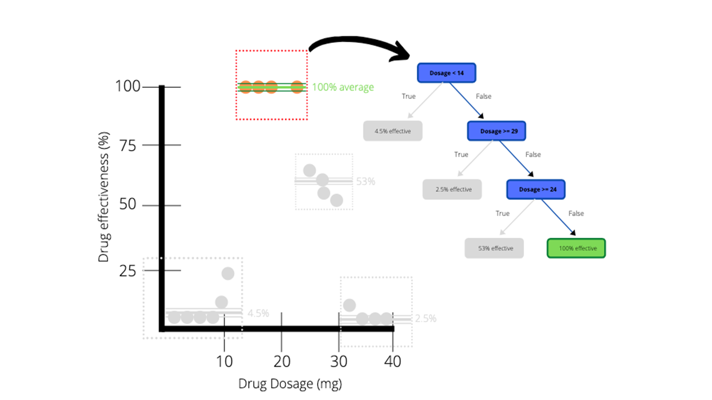
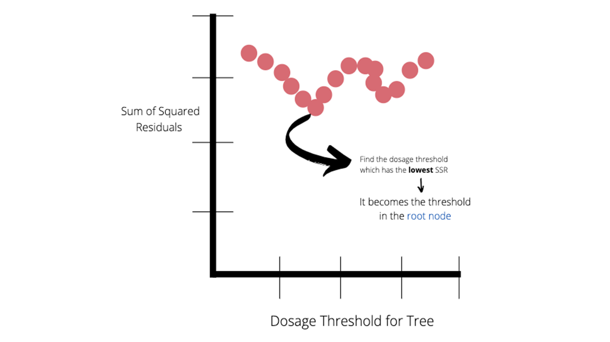
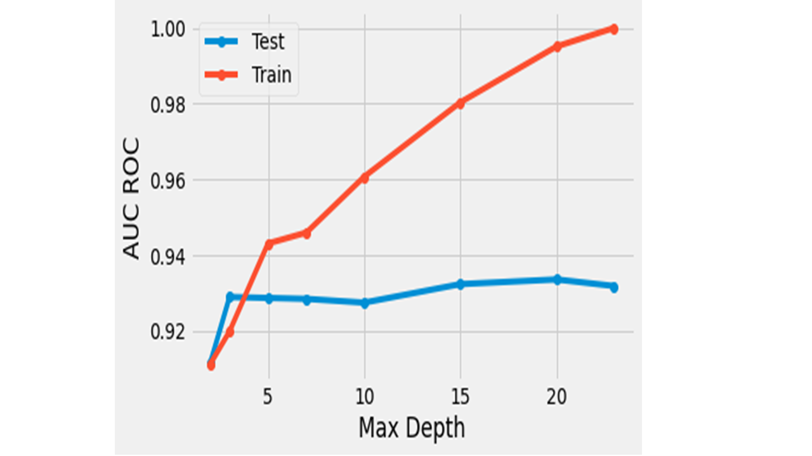
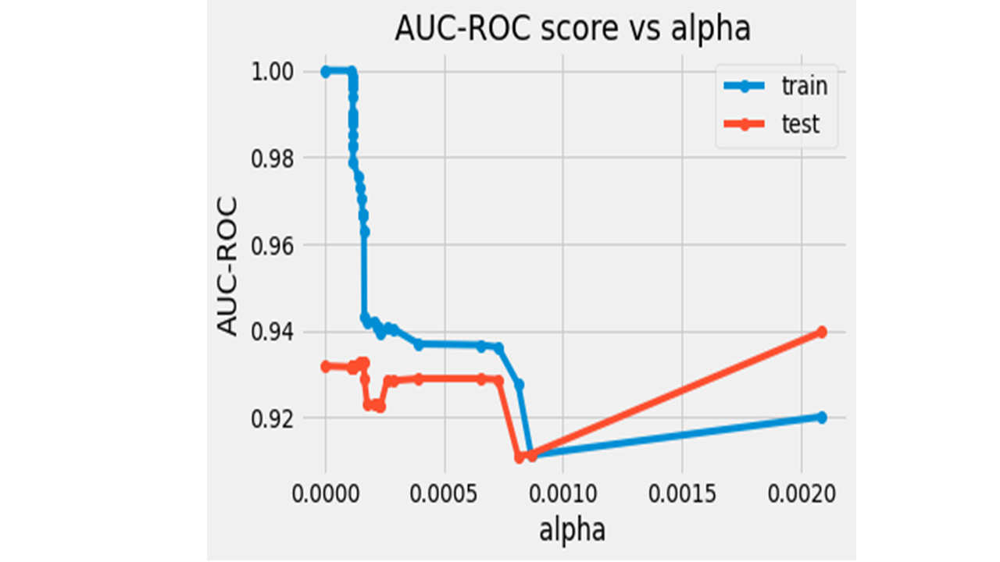

6 Week 6
6 Classification methods 1
6.1 Summary
In this summary, I will go through several Machine Learning (ML) classification methods. The classification methods can be divided into two approach - unsupervised and supervised algorithms. However, this diary will mainly focus on the supervised algorithms.
Supervised ML follows the following process:
- Class definition
- Pre-processing
- Training
- Pixel assignment
- Accuracy assessmentSupervised Classification Process in Remote Sensing (Source: GISgeography)
6.1.1 Classification and Regression Trees (CART)
- General Information about CART
CART is a binary split and it consists of classification trees and regression trees. My interpretation of CART is that when we put our data on a 2D graph, we can see that data points cannot be solely captured by a single straight line.

CART Algorithm (Source: DataDrivenInvestor)
Thus, we subset our data into smaller groups and calculate the average for each data chunk. Each chunk is composed of some nodes. We add up nodes in the chunk one by one and check to what extent adding nodes gives the lowest sum of squared residuals (SSR). To a certain point, adding nodes to the chunk would return a lower SSR, however, at some point we will notice that adding an extra node would give us a higher SSR. In this manner, We check SSR for different threshold till we get the lowest SSR. When we identify the lowest SSR, the average of the nodes in that chunk becomes a threshold. This threshold is where a decision tree divides. This indicates if we subset our data in many times, we can get a precise and accurate model. However, this poses a problem of over-fitting.

CART SSR Threshold (Source: DataDrivenInvestor)
- How to prevent over-fitting in CART?
There are two methods to prevent over-fitting in CART.
- Setting Maximum Tree Depth: can limit how much trees can grow. 20 is default.

CART with Maximum Tree Depth (Source: Towards Data Science)
- Weakest link pruning: basically means that we use a full size regression tree and we see if removing a leaf (a chunk of nodes) gives a lower tree score. We start with 0 for the value of \(\alpha\), and increase it until we get a lower tree score. The equation for tree score is as below:
\(Tree-score\) = \(SSR\) + \(\alpha\) * \(T(Number-of-leaves)\)
Once we have those values for \(\alpha\), we divide our data into training and test data. We take training data with all the values for \(\alpha\) and calculate the SSR. Then, we look for which \(\alpha\) value returns the lowest SSR. We repeat this process several times and look for the average value until we get the lowest SSR.

CART with Pruning (Source: Towards Data Science)
6.1.2 Random Forests (RF)
- General Information about RF
RF simply means that many are better than one. We do “bootstrap” samples (bagging - only 70% of data is used), and create nodes with random number of variables and on and on. Eventually, we will make many decision trees from random number of variables. These different decision trees are called a forest.

Random Forests Classification (Source: Feng et al, 2018)
- How a decision is generated in RF?
We test this forest with the samples that were not used to create the decision trees. These samples are called “Out of Bag (OOB)” (30%). The majority of decisions made on the OOB are chosen, and the proportion fo OOB incorrectly classified are called OOB error. For example, when we want to classify a pixel, if the majority of decision trees says it is an urban area, the pixel is categorised as an urban area. One thing to note is that OOB is different from test data as test data are never included in building decision trees.
6.1.3 Maximum likelihood
Maximum likelihood is a parametric classifier which expects data to be normally distributed. This classifier uses probability. This means that we can set a probability threshold for a land cover type prior to initialising the classifier. Those pixels whose values are below the set probability are not classified.
6.1.4 Support Vector Machine (SVM)
- General Information about SVM
SVM is a maximum margin classifier. SVM looks for a place where it can separate datasets most effectively. The benefit of SVM is that it uses structural risk minimisation which minimises errors on unseen data.

Illustration of Support Vector Machine (Source: skilltohire)
The distance from the diving line to the closest points is called the maximum margin. However, sometimes points from some datasets are very close to points of other datasets, which could lead to misclassification. This issue can be dealt with soft margin that allows some wrongly classified points to get the overall best results. However, as outliers are included within the margins, margins become bigger which could cause underfitting problem. Inversely, hard margin does not allow any misclassification. This does not allow outliers within the margins so it could cause overfitting issue.

Hard and Soft margin (Source: Velocity Business Solutions
- How to wiggle SVM?
There are 3 hyper-parameters that we can control to wiggle SVM.
C: can determine the extent of misclassification that SVM can allow. If ‘C’ is large, SVM has a hard margin. On the contrary, if ‘C’ is small, SVM has a soft margin.
Kernel: transforms the data when the data cannot be linearly separated.

Kernel trick which projects data to a higher dimensional space (Source: Towards Data Science)
- gamma: defines the decision boundary. The larger the ‘gamma’ is, the higher probability of overfitting is. The smaller the ‘gamma’ is, the more linear the decision boundary is, which might cause underfitting issues.

Illustration of how change in gamma affects the decision boundary (Source: Analytics Vidhya)
The best values for C and gamma can be searched through using grid search, which tests every possible values for the hyper-parameters
- What is the example of the application of SVM?
Let’s say ‘pixel 1’ has values for band 1, band 2, band 3, and so on. For reference, a pixel which has a number of band values is called Pattern vector. If there are forests, they will have many pattern vectors. If we put these into a feature space, these pattern vectors will be very close and on top of each other. This is the moment where SVM can come into play and separate them by allowing some misclassification.
6.2 Applications
6.3 Reflections
The week 6’s lecture covers a number of ML algorithms that are being used in satellite imagery classification. These classification methods are employed to better distinguish one band from the other band which help classifying land cover in the image. They essentially do the same functionality in classifying data but they do it in different ways.
However, there are some aspects that we have to ponder. Firstly, these classifiers often make things very complicated. While state-of-the-art ML algorithms are highly accurate, they are very difficult to interpret.
Secondly, we need to consider why we are using a specific ML algorithm to classify our data. If we could differentiate one band from the other with a simple method, is there still a necessity to use a highly developed classification method?
The last but not the least, we have to think about classification itself. In reality, one pixel is not solely composed of one type of land cover types. It can co-exist with other types of land cover types. Therefore, we need to contemplate on to what extent we have to classify or ignore the values in a pixel.

Classification of Pixels (Source: Peter Fisher)